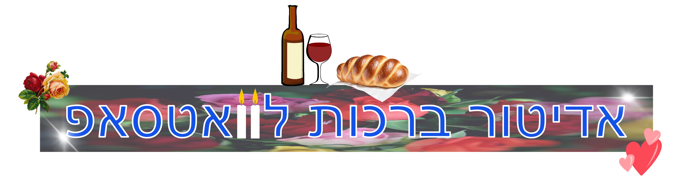

מעין לאלזארי
אתר זה מבוסס על מחקר קצר בנושא ברכות Whatsapp במסגרת קורס "מחקר וידאוגרפי", מוזמנים להכין ברכה לסבתא ולהפתיע אותה בשישי!

אתר זה מבוסס על מחקר קצר בנושא ברכות Whatsapp במסגרת קורס "מחקר וידאוגרפי", מוזמנים להכין ברכה לסבתא ולהפתיע אותה בשישי!
אילו מאפיינים ויזואליים מרכיבים את ברכות הוואטסאפ שכולנו מכירים? המחקר מציג ניתוח חזותי של 292 ברכות, ובוחן את הסטטיסטיקה מאחורי בחירת הצבעים, הנושאים, הטקסט והאלמנטים הגרפיים.